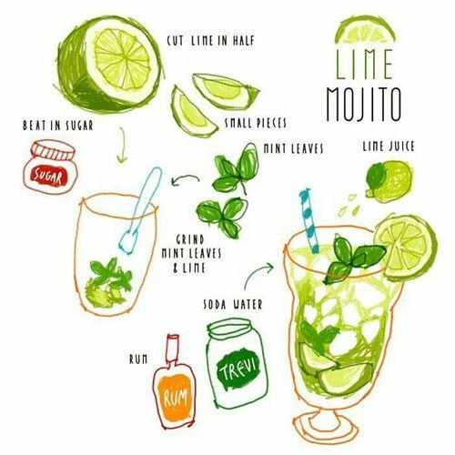

Recipe for Zesty Lime Mojito

Ingredients:
- 10 fresh mint leaves (plus extra for garnish)
- 2 teaspoons granulated sugar (adjust to taste)
- Juice of 2 limes (approximately 4 tablespoons)
- 2 ounces white rum (adjust based on desired strength)
- Club soda (to top off the cocktail)
- Ice cubes
- Lime wedges (for garnish)
Instructions:
- Time to muddle! In a sturdy glass, add the fresh mint leaves and granulated sugar. Use a muddler or the back
of a spoon to gently crush and release the aromatic oils from the mint leaves. Let the minty fragrance fill
the air!
- Squeeze the juice of the limes into the glass. The zesty lime juice will add a tangy kick to your Mojito.
- Add the white rum to the glass. Adjust the amount based on your preference for a stronger or milder
cocktail. Feel free to channel your inner mixologist and experiment!
- Fill the glass with ice cubes, giving it a good stir to combine all the ingredients and chill the mixture.
- Top off the glass with club soda to add a refreshing fizz. Pour it slowly to maintain the Mojito's bubbly
allure.
- Garnish your Lime Mojito with an extra sprig of fresh mint leaves and a lime wedge. It'll make your cocktail
look even more enticing.
- Grab a straw or a long spoon, and take your first sip of this zesty delight. Let the combination of mint,
lime, rum, and bubbles transport you to a tropical paradise.
- Savor every sip and imagine yourself lounging on a sunny beach. Feel the cool, citrusy flavors dance on your
taste buds.
- Repeat steps 7 and 8 until your glass is empty or until you've achieved maximum relaxation and enjoyment.
- Share the Lime Mojito recipe with friends, and invite them over for a refreshing and lively cocktail hour.
Cheers to good times and delicious concoctions!
Note: Feel free to customize your Lime Mojito by adding a splash of simple syrup for extra sweetness, or
experimenting with different variations such as using flavored rums or adding fresh fruit like strawberries or
mangoes. The Mojito is a versatile cocktail that welcomes creativity and personalization. Enjoy the lime-infused
bliss!
Remember to enjoy your Lime Mojito responsibly and never drink and drive. Cheers!